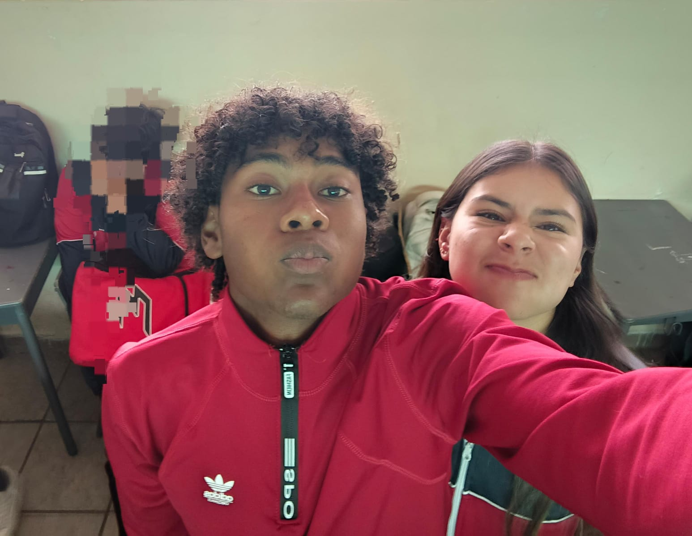
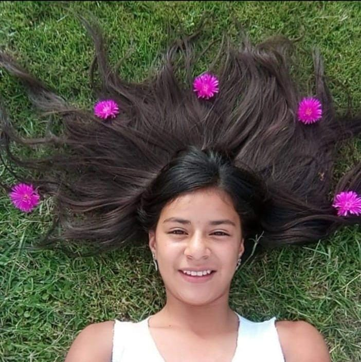
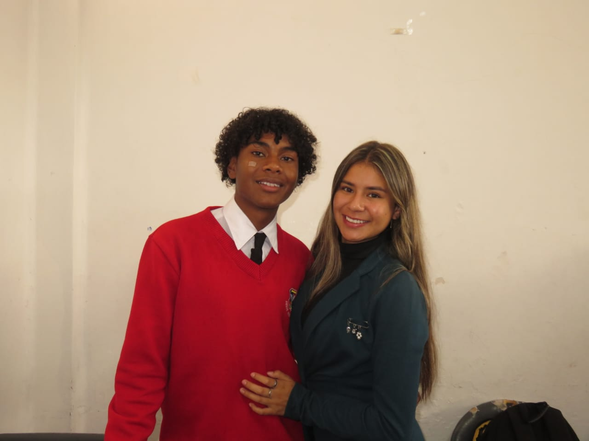
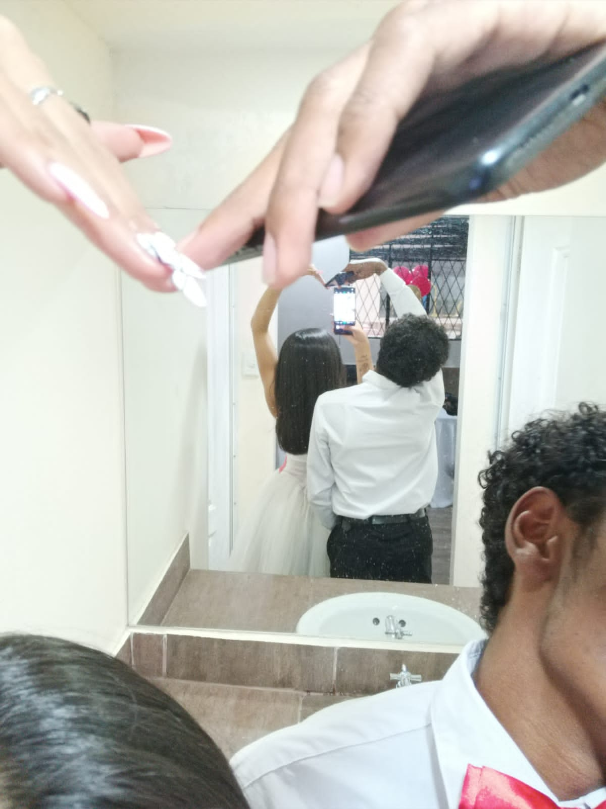

Decir que te quiero no describe todo lo que siento por ti, decir te amo no significaria nada, ya que no hay palabra, frase, poema, que describa lo que siento por ti... en fin no hay nada que se compare a mi amor por ti. En este dia tan especial quiero desearte un FELIZ CUMPLEAÑOS, espero que la pases increible en tu día, ya que ya son 17 años los que cumples. Cada dia crece mas mi cariño por ti, tú eres la persona que siempre me ayuda en todo, me da consejos, se rie de mis chistes malos, la que me aguanta en toda ocasion... simplemente mi mejor amiga, quiero que asi como estuviste estos tres años te quedes paara toda la vida, quiero ser el que siempre esta para ti, en las buenas y malas, quiero ser el que te despida cuando te vayas a España, quiero estar en cada momento de tu vida sintiendome feliz por la gran mujer que eres, aunque a veces me caigas mal, a veces lleguen esos momentos donde no sepas que hacer, creeme que siempre me tendras para ti... dispuesto para ayudarte, levantarte y apoyarte en cadda momento malo. Eso es un poco de todo lo que siento por ti... no me alargo mas porque me da pereza escribir... otra vez te deseo un FELIZ CUMPLEAÑOS y quiero que sepas que nunca me cansare de decirte que TE QUIERO, TE AMO y aunque pasen los años siempre seras MI NIÑA, MI FLACA... MI MEJOR AMIGA❤️.

